En este ejercicio vamos a instalar un Windows XP SP2 sobre una
máquina virtual que correrá sobre el hipervisor
VMware Workstation del Windows 7. Para ello, seguiremos estos pasos:
1)
Esta máquina virtual va a tener un consumo
apreciable de memoria, por lo que nos aseguraremos, antes de empezar,
de que no haya ninguna otra máquina virtual en
ejecución.
2) En el
directorio D:\practicas\MV
crear una carpeta de nombre WinXP.
Para crear la máquina virtual usaremos el procedimiento
"Custom", que nos permite mayor control sobre los parámetros
de la máquina.
3) Ejecutar
VMware Workstation, y crear una nueva máquina virtual
siguiendo los pasos y valores mostrados en esta animación.
4) Arrancar
la máquina virtual con Power
on. Como no hemos insertado todavía el DVD con
el sistema operativo, veremos cómo la máquina
virtual busca una instalación de red PXE, y como no la
encuentra, se detiene.
5) La imagen
ISO del DVD de instalación del Windows XP es el fichero winxp.ISO, que
está en el directorio D:\practicas\MV.
Insertamos esta imagen en la unidad virtual de DVD y luego reiniciamos
la máquina virtual; el procedimiento para todo ello se
detalla en esta
animación.
6) Una vez
arrancado el instalador, pulsar ENTRAR
para confirmar que queremos instalar ahora Windows XP, y F8 para aceptar el
contrato de licencia.
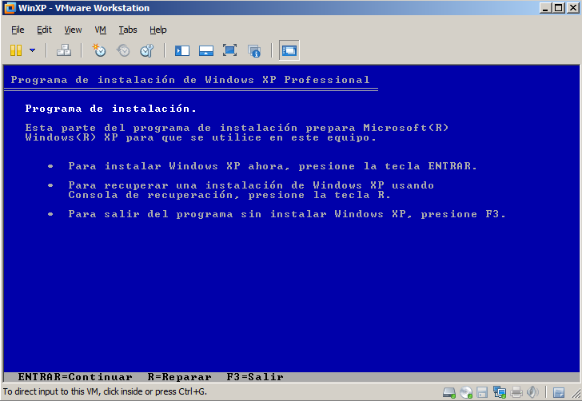
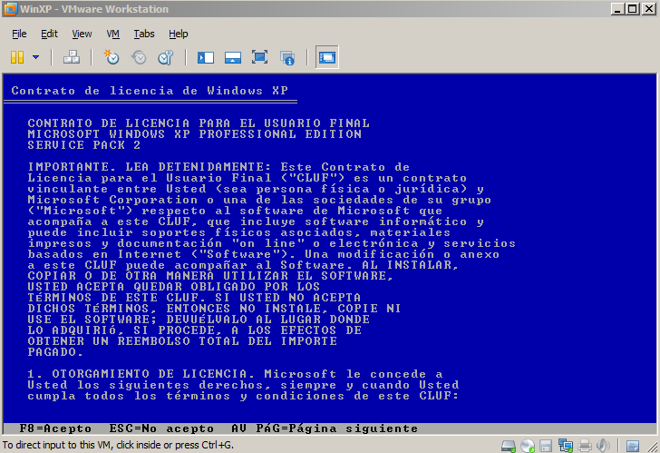
7) Vamos a
usar el disco virtual como una única partición,
así que pulsamos ENTER
para instalar el Windows XP usando todo el espacio no particionado.
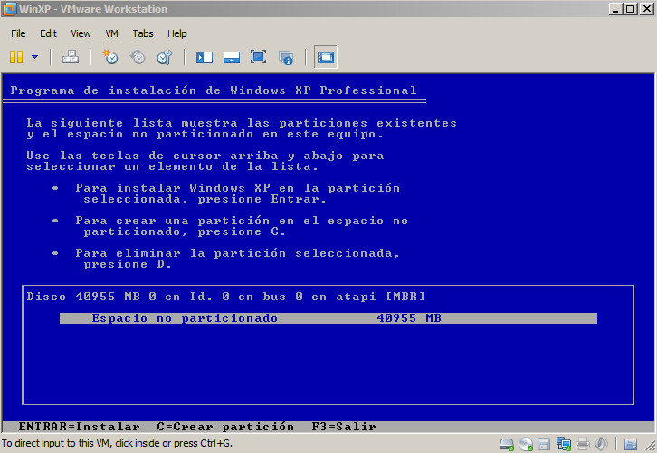
8) En el
siguiente paso el instalador pregunta si queremos hacer un formateo
NTFS rápido, o si queremos un formateo convencional, que
recorre el disco entero. Es MUY IMPORTANTE
responder aquí que
use el formato rápido, como muestra la figura.
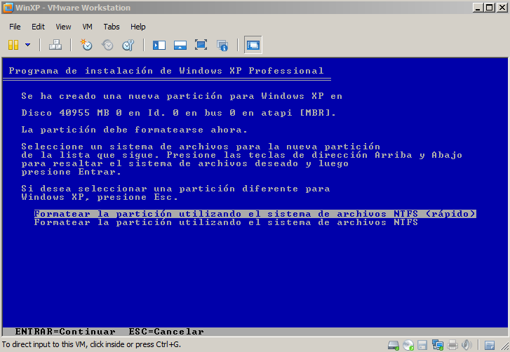
La razón para esta elección es que estamos usando
un disco duro virtual "thin", es decir, compuesto por un fichero que
crece sólo uando se pida espacio para nuevos ficheros en el
disco virtual, y que por tanto ocupará mucho menos que los
40 GB con que se ha definido. El formateo rápido NTFS se
limita a inicializar las estructuras y metadatos de control
del sistema de ficheros, y por tanto hará que el fichero con
el disco duro virtual crezca muy poco. Sin embargo, un formateo
completo convencional NTFS recorre cada uno de los sectores
"físicos" del disco virtual, escribiendo en ellos un
patrón de inicialización, y por tanto
terminaremos con un fichero de 40 GB (que es, justamente, lo que
queríamos evitar mediante el uso del disco "thin").
9) El
instalador comenzará ahora a copiar archivos, tras lo que
reiniciará la máquina para luego continuar
instalando dispositivos. Esperar, simplemente, hasta que aparezca la
pantalla de opciones regionales e idioma, indicando que se va a
utilizar configuración en Español con teclado
Español; confirmar con Siguiente.
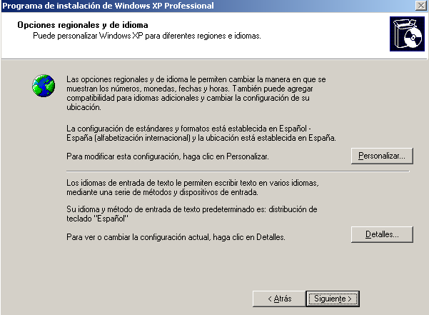
10) Usar nosotros para el
nombre y la organización.
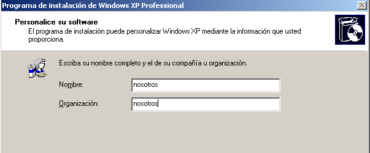
11)
Introducir la clave de producto proporcionada por el profesor.
En el siguiente paso el instalador nos pedirá el nombre para
el equipo. La elección de este nombre debe hacerse con un
poco de cuidado, y teniendo en cuenta si esta máquina va a
estar, en algún momento, conectada en modo NAT o Bridge.
Para nuestro laboratorio de prácticas hay dos posibilidades:
La máquina virtual siempre va a estar conectada
a una red host-only, de forma que la máquina virtual nunca
va a ser vista desde la LAN común a todos los Windows 7
reales que hacen de hipervisor, y por tanto no hay posibilidad de
colisiones de nombres con otras máquinas virtuales. En este
caso podemos elegir el nombre Windows (es decir, nombre NetBIOS) de la
máquina con total libertad, e incluso puede repetirse en
distintas máquinas virtuales.
El interfaz de red de la máquina
virtual puede, en un momento dado, ser conectado a la red Bridged
(VMnet0) o NAT (VMnet8) del hipervisor, y la máquina virtual
será visible por todas las máquinas (reales o
virtuales) que estén conectadas a la LAN del laboratorio. En
este caso debemos asegurarnos de que el nombre Windows de cada
máquina virtual que instalemos sea único (por
ejemplo, añadiendo al nombre base un sufijo
numérico basado en la dirección IP del hipervisor
Windows 7); si el nombre no es único, la máquina
detectará al arrancar la presencia de otra
máquina virtual con el mismo nombre, y puede deshabilitar el
interfaz de red.
Como nuestra máquina virtual Windows XP va a correr, de
momento, exclusivamente en una red host-only, no vamos a tener
problemas de colisiones de nombres. Por ello, todos los alumnos
usarán el mismo nombre, xpvirtual,
para sus respectivas máquinas virtuales (y de esta forma
podemos mantener un guión común a todos los
alumnos, sin tener que estar haciendo constantemente mención
a sufijos individualizados).
12) Asignar,
por tanto, el nombre de equipo xpvirtual.
Asignar también la contraseña de administrador,
que será deii15.
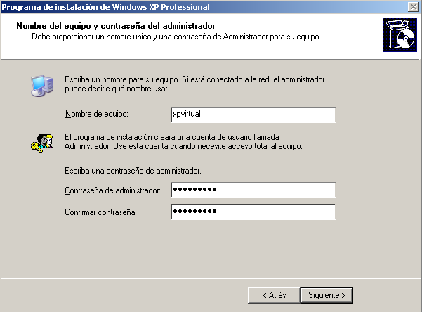
13) En la
ventana de Configuración
de red, elegir Configuración
típica; como la máquina virtual
tomará la dirección IP por DHCP, esta
configuración es perfectamente válida.
14) Usar CURSOFP como grupo
de trabajo.
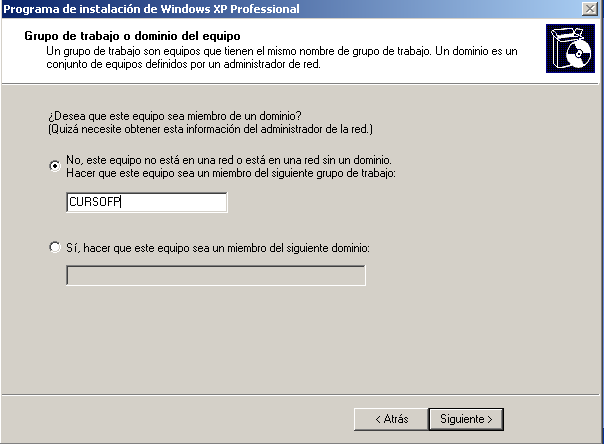
15) Una vez
finalizada la instalación y reiniciado el sistema, permitir
a Windows ajustar automáticamente la resolución
de pantalla. Pulsar Aceptar
en la petición de confirmación.
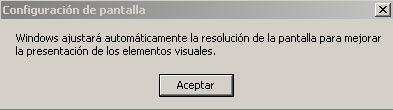
16) Comenzar
la configuración final pulsando Siguiente.
17) No
activar las Actualizaciones automáticas. Pulsar Siguiente.
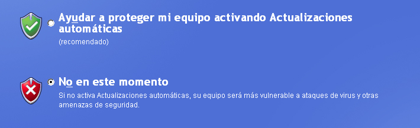
18) Omitir
la detección de conexión a Internet.
19) No
activar Windows. Pulsar Siguiente.
20) Usar curso como nombre de
usuario. Pulsar Siguiente,
y luego Finalizar.
21) Al
iniciarse Windows, pulsar sobre el escritorio para cerrar el
menú Inicio. Después cerrar (pulsando sobre X) la ventana con
información sobre el antivirus. Después pulsar
dentro del globo de información Dar un paseo por Windows XP
para que aparezca la ventana de Paseo
por XP (y deje de aparecer en posteriores arranques).
Pulsar Cancelar.
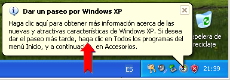
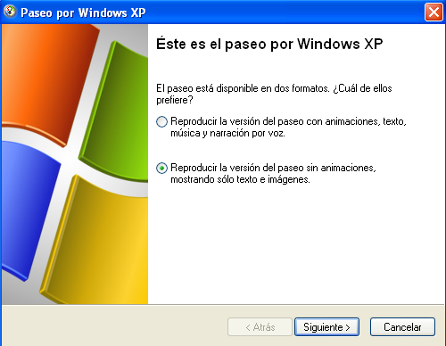
Para finalizar, instalaremos en el Windows XP el conjunto de drivers especiales llamado VMware Tools, que proporcionan funcionalidades avanzadas de video, red y gestión del disco duro virtual.
23) Lanzar la instalación de los VMware Tools usando el menú VM -> Install VMware Tools...
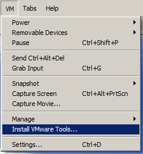
24) Usar la instalación Típica y pulsar Siguiente, Instalar y luego Finalizar. Reiniciar el sistema.
Con ésto tenemos ya completa la instalación básica
de un Windows XP. En un ejercicio posterior configuraremos el sistema
operativo para reducir el consumo de memoria y CPU, y el tamaño
en disco de esta máquina virtual (y, de paso, aprenderemos
cómo usar instantaneas para poder experimentar con opciones de
configuración y volver atrás si el resultado no es
adecuado).